Campus Infrastructure
Object Detection
with YOLOv11n
End-to-end pipeline for detecting four campus assets — projectors, whiteboards, fire extinguishers, and door signs — using a curated 800-image dataset with perfect class balance, achieving near-saturating accuracy on safety-critical classes.
End-to-End Workflow
Seven notebooks take raw dataset exports through aggregation, splitting, health-checking, training, evaluation, inference, and export — each stage's artefacts feeding the next.
Data Collection & Preparation
Raw images sourced from separate Roboflow and Kaggle exports. NB01 aggregated exactly 200 (image, label) pairs per class into data/aggregated/<class>/, re-encoding all images to JPEG.
| Class | Available Pairs | After Cap | Source |
|---|---|---|---|
| ● projector | 319 | 200 | Projector1, 2, 3 (Roboflow) |
| ● whiteboard | 200 | 200 | Single Roboflow export |
| ● fire_extinguisher | 848 | 200 | Kaggle train/valid/test |
| ● door_sign | 240 | 200 | doorsign1–4 (Roboflow) |
NB02 merged all four classes into a unified Ultralytics-compatible dataset with global ID re-indexing and class ID normalisation (0=projector, 1=whiteboard, 2=fire_extinguisher, 3=door_sign). Stratified 140/40/20 split per class.
| Class | Train | Val | Test | Boxes/img (train) |
|---|---|---|---|---|
| ● projector | 140 | 40 | 20 | 0.82 |
| ● whiteboard | 140 | 40 | 20 | 1.09 |
| ● fire_extinguisher | 140 | 40 | 20 | 1.19 |
| ● door_sign | 140 | 40 | 20 | 1.86 |
| Total | 560 | 160 | 80 | — |
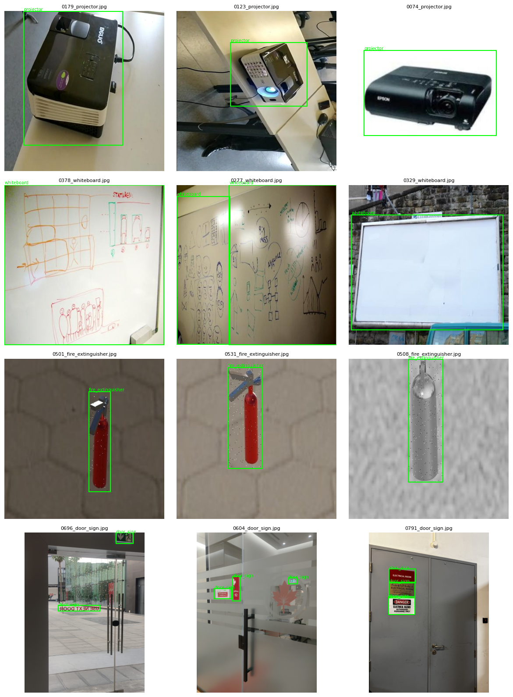


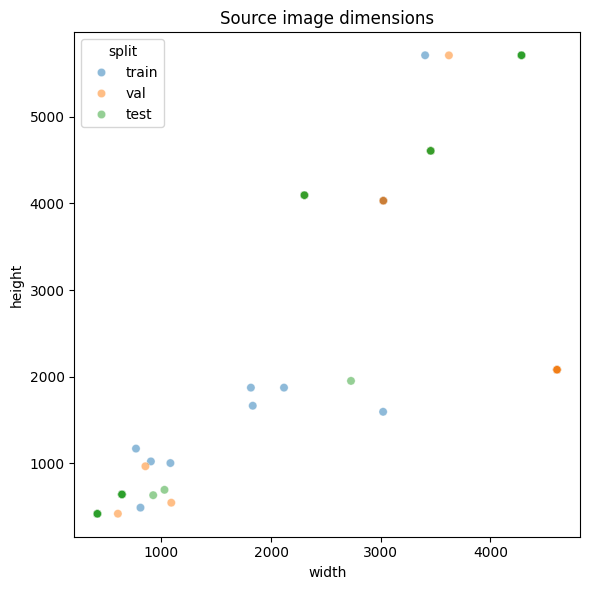
Model Selection & Training Config
Architecture Comparison
| Architecture | Params | COCO mAP | Latency (T4) | Verdict |
|---|---|---|---|---|
| Faster R-CNN (ResNet-50) | ~41 M | 42.9 | ~47 ms | Too slow |
| SSD MobileNetV2 | ~3.4 M | 22.1 | ~1.2 ms | Low ceiling |
| YOLOv8n | 3.2 M | 37.3 | ~1.47 ms | Strong baseline |
| YOLOv11n | 2.6 M | 39.5 | ~1.55 ms | ✓ Selected |
| YOLOv11s | 9.4 M | 47.0 | ~2.46 ms | +acc, +params |
| YOLOv11m | 20.1 M | 51.5 | ~4.70 ms | Not edge |
Loss Weights
YOLOv11n — Model Structure
Single-stage anchor-free detector with task-aligned assignment (TAL) — eliminates anchor tuning and improves small-object recall.
2×depthwise conv
Multi-scale context
P3/8 · P4/16 · P5/32
Training Curves & Convergence
Model peaked at epoch 60 (val mAP@0.5 = 0.9489). Val box loss flattened around 0.84 while train loss continued decreasing — mild overfitting, correctly halted by patience=15.
| Epoch | Train Box Loss | Val mAP@0.5 | Val mAP@0.5:0.95 |
|---|---|---|---|
| 1 | 1.068 | 0.199 | 0.122 |
| 10 | ~0.88 | ~0.650 | ~0.450 |
| 30 | ~0.77 | ~0.880 | ~0.680 |
| 60 (best) | 0.744 | 0.9489 | 0.7251 |
| 100 (final) | 0.511 | 0.938 | 0.735 |


Validation Batch — Ground Truth vs. Predictions
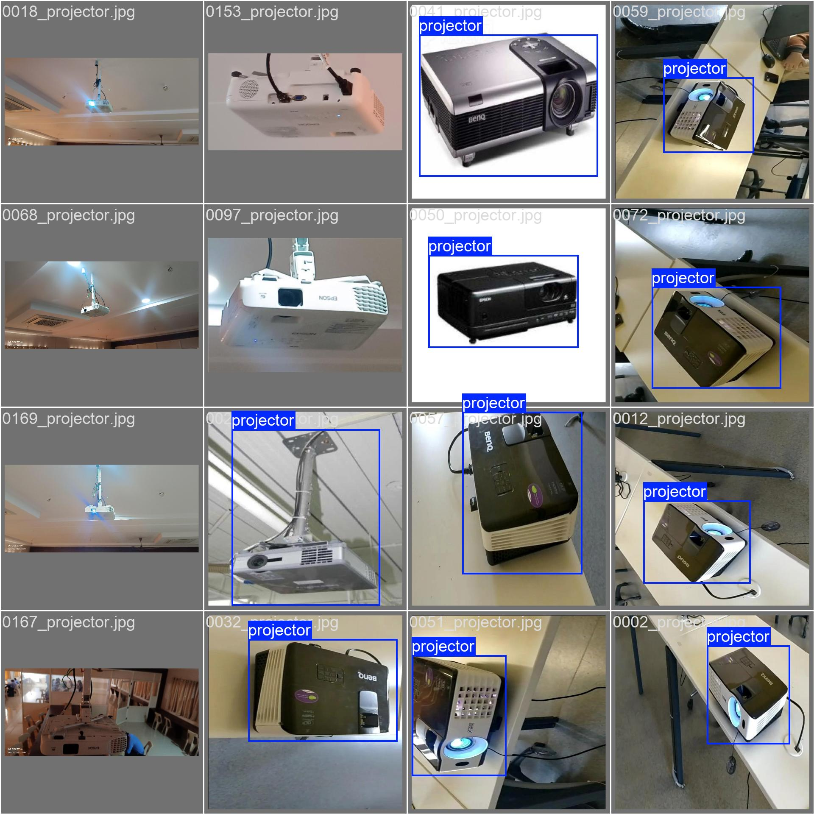
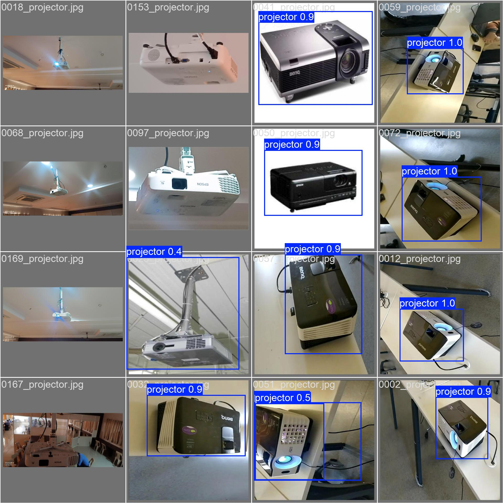
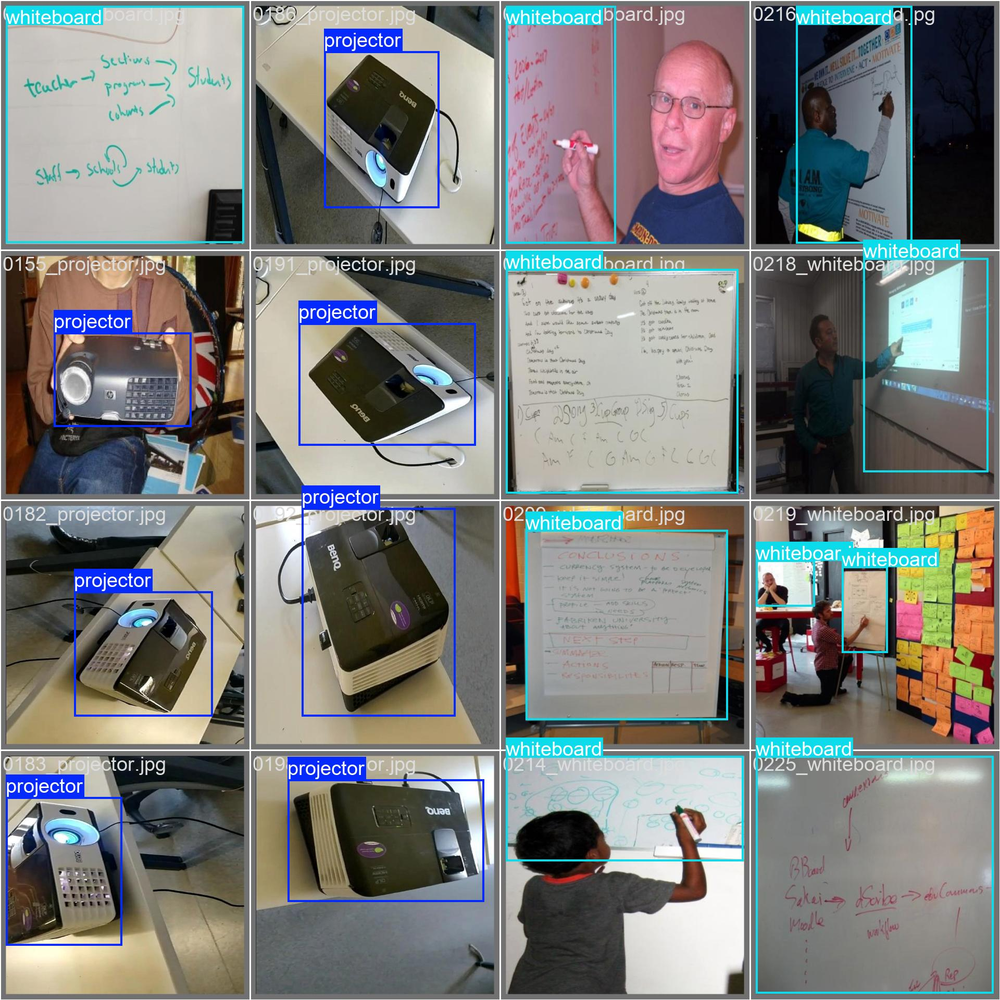
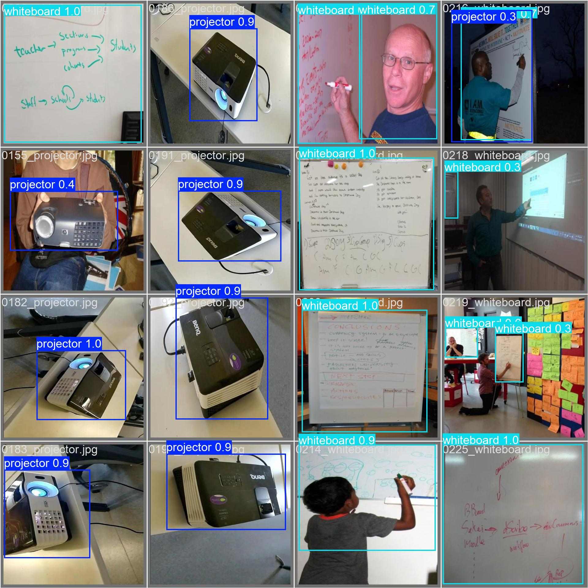
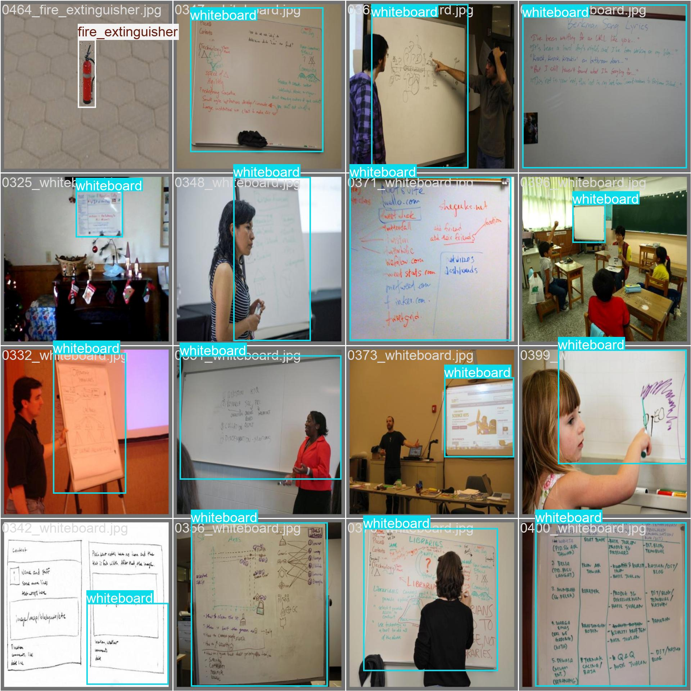
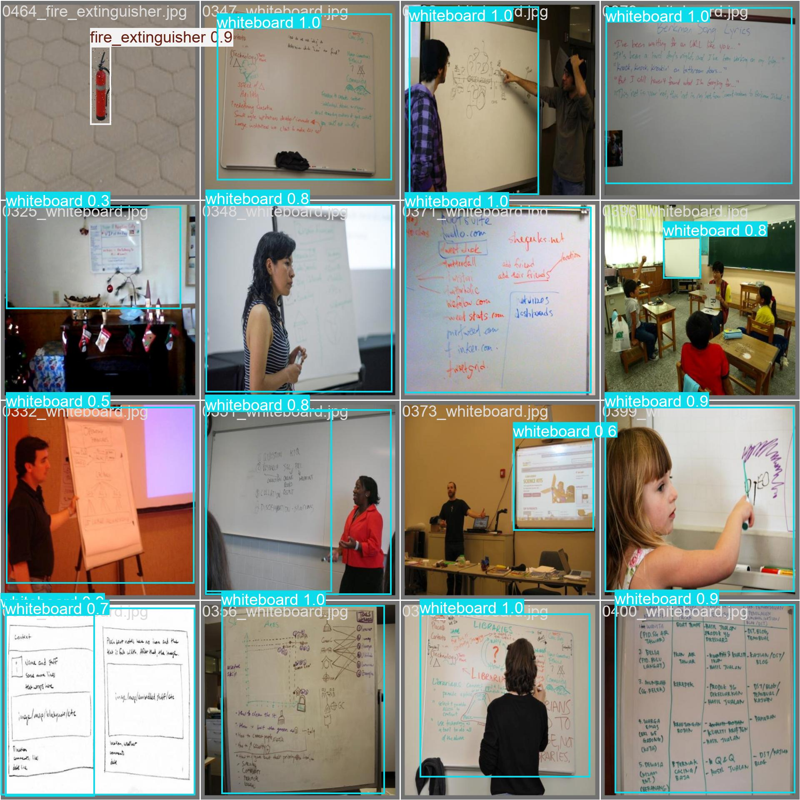
Training Batch Mosaic
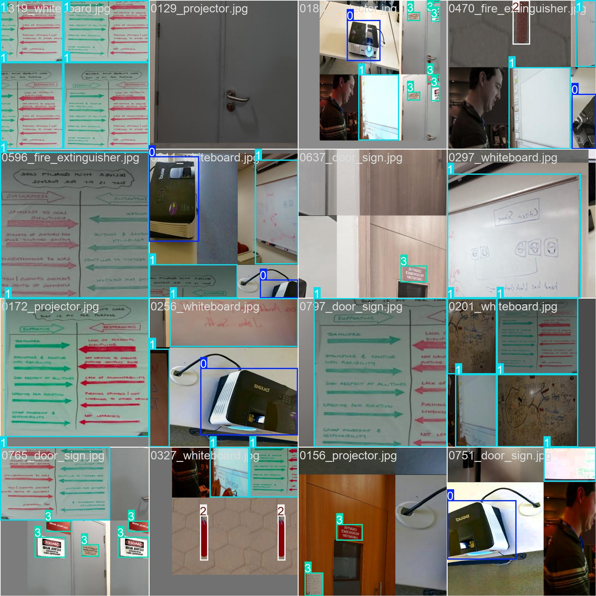
Post-Training Sanity Check

Test-Set Evaluation
Evaluated exclusively on the held-out test split (80 images, 102 boxes) using best.pt at conf=0.25, IoU=0.5.
Per-Class Performance
Confusion Matrices
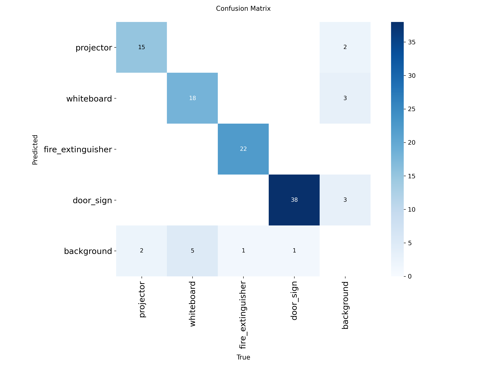


Precision–Recall & Threshold Curves


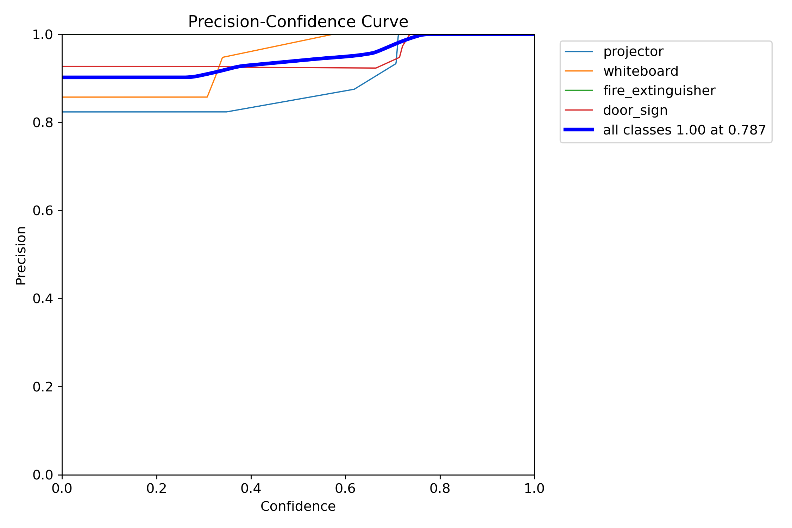
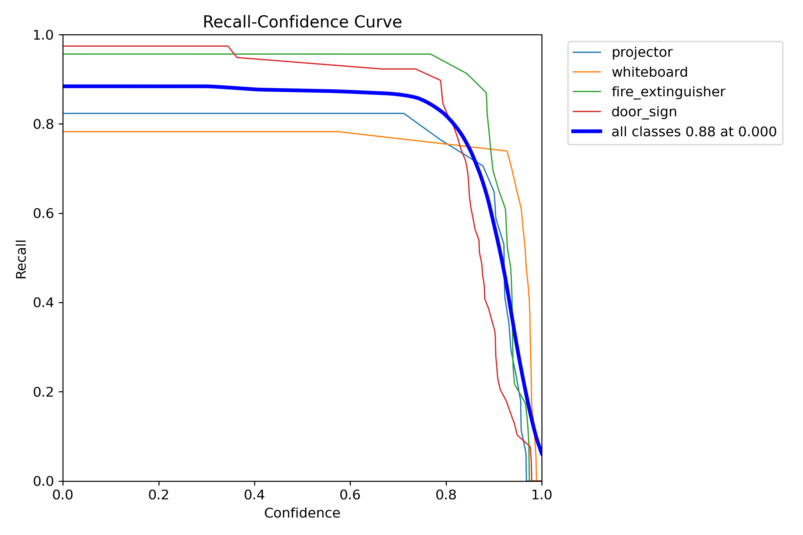
Qualitative Predictions

Ultralytics Results Dashboard

Strengths & Limitations
Improvement Directions
| Issue | Suggested Fix |
|---|---|
| Low projector/whiteboard recall | 100–200 additional images per class from varied viewpoints and lighting |
| mAP@0.5:0.95 gap | Upgrade to YOLOv11s; or add test-time augmentation (TTA) |
| Potential domain shift | Add online images from different institutions; apply colour jitter at inference |
| Overfitting after epoch 60 | Add dropout (currently 0.0) or stronger weight decay |
Inference & Export
Live Inference Modes — NB06
CONF_THRESH = 0.25 · IMGSZ = 640 · device auto-selected (CUDA → MPS → CPU)ONNX Export — NB07
A complete object detection pipeline for four campus infrastructure classes was built and evaluated. YOLOv11n achieves mAP@0.5 = 93.3% with zero false positives at the chosen confidence threshold. Safety-critical classes fire_extinguisher and door_sign are detected at near-saturation accuracy (mAP@0.5 > 97.8%). Both PyTorch and ONNX weights are production-ready for real-time campus deployment.